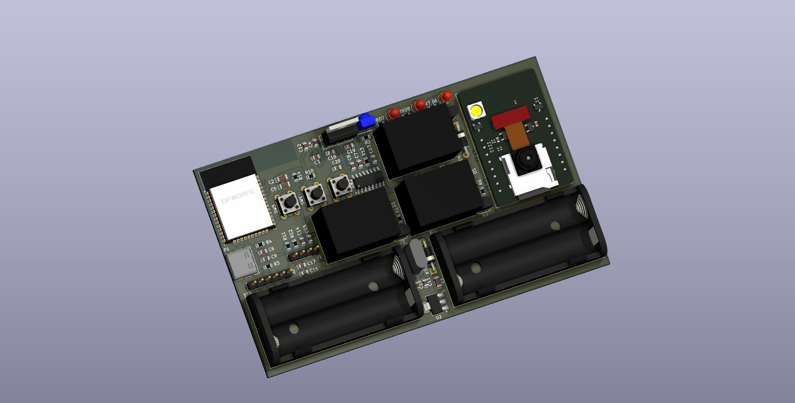

Project Description
Overview

The Smart Power Management System Using Microcontroller is a versatile and energy-efficient solution designed to optimize power usage in modern spaces.
It achieves this by automating the control of appliances such as lights, fans, and televisions based on room occupancy and user identification.
The system integrates powerful microcontrollers, sensors, and relays, providing a compact and efficient solution for energy management. This innovative approach reduces energy waste
while enhancing user convenience and security, making it ideal for smart homes, offices, and other applications.
ESP32-WROOM-32D

The ESP32-WROOM-32D serves as the core microcontroller driving the system. This module combines robust processing capabilities with integrated Wi-Fi and Bluetooth modules,
making it an excellent choice for IoT and automation projects. Its dual-core architecture ensures efficient management of multiple tasks, such as handling sensors, relays, and communication.
The ESP32 was selected for its versatility, energy efficiency, and ability to process real-time sensor inputs. It seamlessly integrates with other components to ensure a responsive and reliable system.
- Processes data from IR sensors for occupancy detection.
- Communicates with the ESP32-CAM module for user recognition.
- Sends control signals to relay modules for appliance management.
ESP32-CAM Module

The ESP32-CAM Module adds advanced image processing and user authentication to the system. Its built-in camera enables iris recognition, enhancing security and personalization.
This compact module reduces the overall size of the project while maintaining high functionality.
The ESP32-CAM was chosen for its cost-effectiveness, high-resolution capabilities, and integration of camera and microcontroller features into a single unit. It plays a crucial role in providing secure access control.
- Captures images for iris recognition to identify authorized users.
- Communicates authentication results to the ESP32-WROOM-32D.
- Enables potential future features like video streaming or remote monitoring.
IR Sensors

Infrared (IR) sensors are essential for detecting motion and occupancy within the room. These sensors operate by detecting infrared radiation emitted by objects, enabling real-time automation.
Their low power consumption and reliable performance make them an ideal choice for this project.
The IR sensors ensure that appliances operate only when the room is occupied, contributing significantly to energy savings and system responsiveness.
- Monitor room occupancy and send input signals to the ESP32-WROOM-32D.
- Trigger appliance control based on detected motion or absence.
- Seamlessly integrate with the ESP32 for accurate communication.
Relay Modules

Relay modules act as the interface between the low-power microcontroller and high-power appliances. These electromechanical switches enable the system to safely control devices such as lights,
fans, and televisions. Their design ensures safe and reliable operation when managing high-power loads.
The relays provide electrical isolation and flexibility, allowing the system to handle various appliance types while maintaining safety and reliability.
- Receive control signals from the ESP32-WROOM-32D to activate or deactivate appliances.
- Provide isolation between the control circuit and high-power appliances.
- Ensure safe and reliable operation of connected devices.
Custom PCB

The custom PCB integrates all components into a single, compact platform, ensuring reliability and scalability. Designed with future enhancements in mind, the PCB minimizes wiring complexity
and provides efficient power distribution. Its optimized layout includes thermal management features, ensuring stable performance even under extended operation.
The PCB not only simplifies assembly but also enhances the overall durability and reliability of the system. Its design aligns with modern engineering practices, emphasizing compactness and scalability.